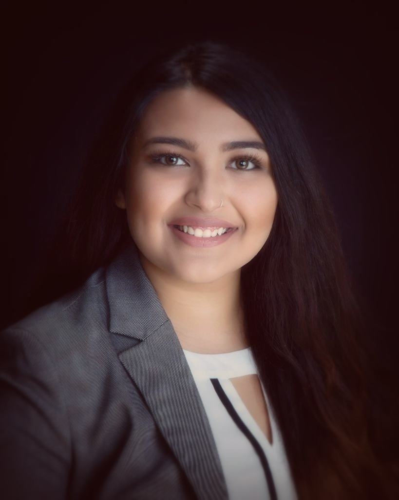

About Me

I am a recent graduate from the University of Waterloo, and my majors were Accounting and Financial Management. I so far worked in mutual fund brokerage at FundEx Investments, and as an auditor at Ernst and Young. I am currently preparing to write my CFA Exam (Level 1) in June of this year.
I love learning new things, and exploring new fields. I guess it feeds off my hobbies: I am a complete bibliophile. Some of the things that I have learned in the past are the Spanish language, and graphic design. I learned how to use the Adobe Creative Suite in a professional capacity, and pursued graphic design as a freelancer. Graphic design also lead me to understanding the basics of making a webpage, using DreamWeaver.
I am enthusiastic and passionate about all things learning-related - a philomath. I am a motivated individual, driven by an aspiration to not only succeed, but to constantly improve and reinvent processes. My eagerness to grow and pioneer solutions has enabled me to be a valuable student leader, project manager, and contributor to various audit teams.
My range of skills from front-end development, data management and analysis, to financial management allow me to serve an increasingly tech-dependent finance world.
Additional qualifications and experience:
- Compliance procedures: National Instruments, SOX.
- ERPs: Univeris, SAP, Oracle.
- Database/Management: R, SQL.
- Other: C++